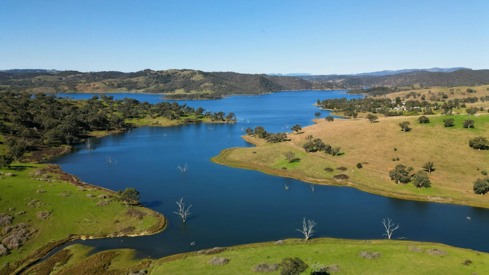

Biodiversity Modelling (Ecology)
Modelled biodiversity variation using ecological variables such as climate, elevation, and land cover.
Applied regression and regularisation with cross-validation to identify key environmental drivers while
ensuring robust generalisation. Demonstrated the adaptability of data science methods to sustainability
and ecological research domains.

R · Regression · Cross-validation · Environmental Data · Statistical Modelling
This project investigates ecological datasets to understand factors that explain biodiversity variation.
By applying regression techniques and cross-validation, I aimed to identify which environmental variables
(e.g., temperature, rainfall, elevation, land cover) are most predictive of biodiversity indicators.
- Task: Predict biodiversity variation using ecological covariates.
- Stack: R, tidyverse, caret.
- Outputs: Variable importance, regression models, and validation metrics.
- Inputs: Environmental features (temperature, precipitation, elevation, land cover, human impact indices).
- Target: biodiversity indicator (species richness / abundance index).
- Preprocessing: scaling numeric predictors, encoding categorical covariates, removing collinear features.
- Split: k-fold cross-validation for generalisation testing.
I used regression models to quantify the relationship between predictors and biodiversity outcomes:
- Linear regression for baseline interpretability.
- Regularised regression (Ridge, Lasso) to handle multicollinearity and select features.
- Cross-validation (10-fold) to assess generalisation stability.
- Adjusted R² and RMSE as evaluation metrics.
- Identified climate (temperature, precipitation) as key drivers of biodiversity variation.
- Regularised regression improved robustness, reducing overfitting compared to OLS.
- Cross-validation confirmed stability across folds with moderate predictive power.
- Findings highlight importance of multi-factor analysis in ecological studies.
- Dataset size limited predictive accuracy.
- Biodiversity influenced by complex interactions not fully captured here (species interactions, land-use history).
- Correlation ≠ causation — models explain variation but don’t prove ecological mechanisms.
Reproducibility & Packaging
- Config-driven workflow: data load → preprocessing → regression → evaluation.
- Used caret pipeline for cross-validation and hyperparameter tuning.
- Reproducible RMarkdown report with plots and tables for stakeholders.
- Extend dataset with higher-resolution environmental variables.
- Incorporate non-linear models (Random Forest, GAMs) for complex interactions.
- Analyse temporal changes in biodiversity over multiple years.